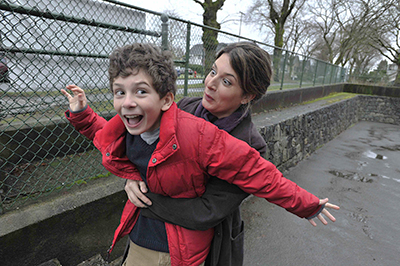
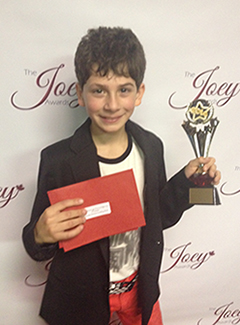

About
Following in his parent’s footsteps (Nicole Oliver, actress; Chris Ainscough, composer/film editor), William Ainscough is making a serious impression in the entertainment industry. It was after watching his mother in action during visits to the sets of some of her film projects that William’s interest in the acting world began. Nicole inspired him to try acting for himself and he began taking classes. 
It was clear after booking his first two auditions that acting for William was a path well chosen. William’s very first attempt at acting was a success, when he landed his first audition in an open casting call for the feature film ‘Hidden’. William was successful in landing the role of Joey, a slightly shy and soulful boy and close friend and neighbor of Zoe’s (Emily Alyn Lind). The feature film, which follows a family hiding in a bomb shelter after a mysterious outbreak devastates civilization, stars Alexander Skarsgard (True Blood, Battleship) and Andrea Riseborough (Oblivion, Made in Dagenham). The film ‘Hidden’, directed by The Duffer Brothers is slated for theatrical release.
William soon followed that experience with playing Billy on the CW/City TV series ‘Seed’ for two seasons. William received many award nominations for ‘Seed’ including a 2014 Leo Award nomination for best performance in a Comedy, Variety or Musical and his 2013 Actor nomination for the ‘BEST NEWCOMER’ category for the UBCP/ACTRA Awards. William also won the Joey Award in 2014 for best leading role youth actor (9 and under) in a TV series Comedy/Action. Other recent highlights for William include playing the iconic role of John Darling in ABC’s ‘Once Upon a Time’, a major supporting role in ‘Zapped’ the television feature for the new Disney Channel starring the US pop music sensation and actor Zendaya, a Guest Star role in ‘The Haunting Hour’,  and a supporting role in the Hallmark Movies & Mysteries original program ‘The Christmas Secret.’
William has just completed principal photography on Radu Mihaileanu’s sweeping epic, ‘The History of Love’, an adaptation of Nicole Krauss’ 2005 book of the same name. The movie will be the first English-language film for Radu Mihaileanu, a Bucharest-born French filmmaker whose previous film La Source des femmes competed at the Cannes film festival in 2011. William plays Bird Singer. He is a preoccupied, strangely serious child, concerned by the woes of the world; he is convinced he is a "lamed vovnik," one of the thirty-six holy people, carrying the weight of the world on his shoulders, and perhaps even the Messiah.
Later Fall 2015, William will commence principal photography on the feature film ‘Milton’s Secret’, an adaptation of Eckhart Tolle and Robert S. Friedman’s book. William will play 11 year-old Milton Adams, who is growing up in an uncertain world. Milton feels as if his whole world is in crisis- his parents are stressed about their careers and finances and Milton is being bullied at school. However, when his Grandpa Howard (Donald Sutherland) comes to visit, he discovers anxiety about the past and worrying about the future only make things worse and prevent him from finding true happiness moment to moment.
Aside from acting, William is an accomplished drummer, loves soccer, and is a huge fan of the online game Minecraft.